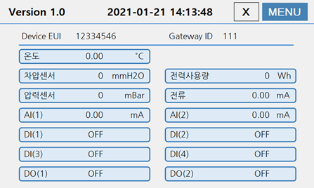
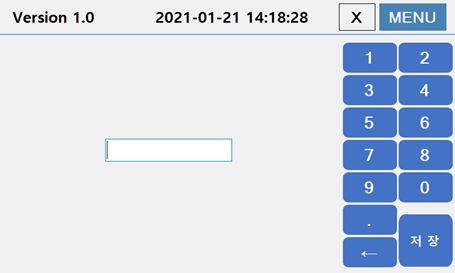
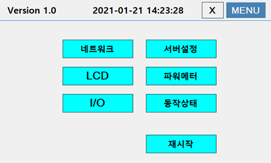
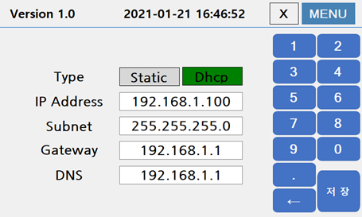
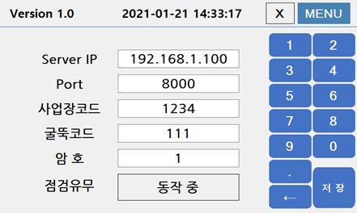
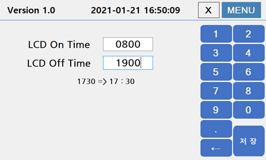
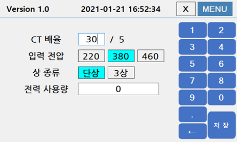
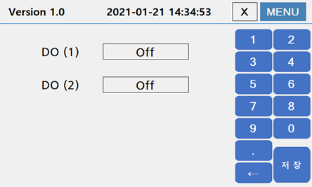

스마트콤보(ITMS-850)의 컨트롤러의 터치스크린 화면을 통해서 I/O보드의 실시간 동작상태를 확인할 수 있으며, 디바이스 설정정보를 조회하거나 변경할 수 있습니다.
초기화면
터치스크린의 초기화면은 I/O보드의 입출력 포트의 동작상태를 실시간으로 보여주고 있습니다. 상단의 MENU버튼을 클릭하여 디바이스 설정화면으로 전환할 수 있습니다.

암호확인
상단의 MENU버튼을 클릭하면, 설정화면으로 전환되기 전에 암호를 확인하는 과정을 거치게 됩니다. 암호는 최대 10자리까지 사용이 가능하며, 초기 값은 1234567로
설정되어 있습니다. 암호는 우측의 숫자패드를 이용하여 입력하면 됩니다. 암호 확인이 정상적으로 완료되면 설정화면으로 전환됩니다. 한번 암호 확인이 완료되면 약 5분간은
암호확인 과정 없이 디바이스 설정화면으로 전환이 가능합니다.

디바이스 설정화면
디바이스 설정화면을 통해서 디바이스 동작에 필요한 설정정보를 조회하거나 변경할 수 있습니다.

- 네트워크 : 디바이스의 네트워크 정보를 조회하거나 변경할 수 있습니다.
- 서버설정 : 환경공단 그린링크 서버접속을 위한 IP 주소와 포트번호 및 사업장번호, 굴뚝코드를 조회하고 변경할 수 있습니다. 또한, 서버접속을 위한 암호를 변경할 수 있습니다.
- LCD : LCD 화면이 켜지고, 꺼지는 시간을 설정합니다.
- 파워메터 : 전력계 소비전력 계산을 위한 입력값을 설정합니다.
- I/O : 2개의 DO(Digital Output) 포트의 동작을 ON/OFF 할 수 있습니다.
- 동작상태 : 초기화면으로 전환합니다.
- 재시작 : 디바이스를 재시작 합니다.
네트워크
디바이스의 네트워크 정보를 조회하거나 변경하는 화면입니다. 설정정보를 변경하는 경우 저장버튼을 클릭하여 변경된 정보를 저장해야 합니다. 설정정보 변경을 취소하는 경우 MENU 버튼을 클릭하여 이전 화면으로 복귀할 수 있습니다.

- Type : 디바이스의 네트워크 정보를 수동으로 입력하는 경우 Static을 선택하고, 자동으로 할당받는 경우에는 Dhcp를 선택합니다.
기본값은 Static이며, Dhcp 로 설정하는 경우에는 아래의 설정은 사용되지 않습니다. - IP : IP 주소를 입력합니다.
- Subnet : Subnet Mask 주소를 입력합니다.
- Gateway : Gateway 주소를 입력합니다.
- DNS : DNS 서버 주소를 입력합니다.
서버설정
환경공단 그린링크 서버접속 정보를 조회하거나 변경하는 화면입니다. 설정정보를 변경하는 경우 저장버튼을 클릭하여 변경된 정보를 저장해야 합니다. 설정정보 변경을 취소하는 경우 MENU 버튼을 클릭하여 이전 화면으로 복귀할 수 있습니다.

- Server IP : 환경공단 서버의 IP 주소를 입력합니다.
- Port : 환경공단 서버의 소켓 포트번호를 입력합니다.
- 사업장코드: 환경공단에서 부여한 설치 사업장의 코드번호를 입력합니다.
- 굴뚝코드 : 환경공단에서 부여한 굴뚝코드를 입력합니다.
- 암호 : 디바이스에서 사용할 암호를 변경합니다.
- 점검유무 : 동작중과 점검중 2가지 상태 값만 가질 수 있으며 상태값을 클릭하게 되면 값이 변경됩니다. 디바이스가 설치된 사업장의 설비가 점검중인 경우에는 5분간격으로 환경공단 그린링크로 전송되는 정보가 서버에서 오동작으로 인식될 수 있기 때문에 점검중으로 변경해야 합니다.
LCD
터치스크린 화면이 켜지는 시간과 꺼지는 시간설정 정보를 조회하거나 변경하는 화면입니다. 설정정보를 변경하는 경우 저장버튼을 클릭하여 변경된 정보를 저장해야 합니다. 설정정보 변경을 취소하는 경우 MENU 버튼을 클릭하여 이전 화면으로 복귀할 수 있습니다.

기본값은 다음과 같이 설정되어 있습니다.
- LCD On Time : 0800
- LCD Off Time : 1900
파워메터
소비전력 측정을 위한 파라미터 값을 조회하거나 변경하는 화면입니다. 설정정보를 변경하는 경우 저장버튼을 클릭하여 변경된 정보를 저장해야 합니다. 설정정보 변경을 취소하는 경우 MENU 버튼을 클릭하여 이전 화면으로 복귀할 수 있습니다.

- CT 배율 : 외부 CT 로부터 전류가 입력되는 경우, 외부 CT 의 배율을 설정합니다. 배율은 30 ~ 700 까지 등록할 수 있습니다.
- 입력전압 : 외부 CT 가 연결된 장치의 입력전압을 설정합니다.
- 상 종류 : 외부 CT 가 연결된 장치의 전압 상 종류를 선택합니다.
- 전력 사용량: 외부 전력량계와 디바이스에서 측정한 소비전력을 동기화하기 위해 외부의 소비전력량을 입력합니다. 전력 사용량에 입력된 값에 디바이스에서 측정된 소비 전력량이 누적되어 화면에 출력됩니다.
I/O
I/O보드에 내장된 DO(Digital Output)포트의 ON/OFF를 상태를 조회하거나 변경하는 화면입니다.

재시작
디바이스를 재시작합니다. 네트워크 설정정보가 변경된 경우에는 디바이스를 재시작해야만 변경된 내용이 적용됩니다.